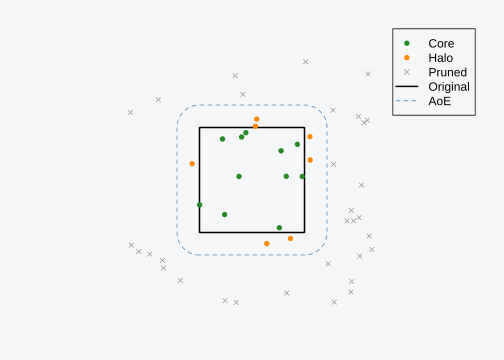
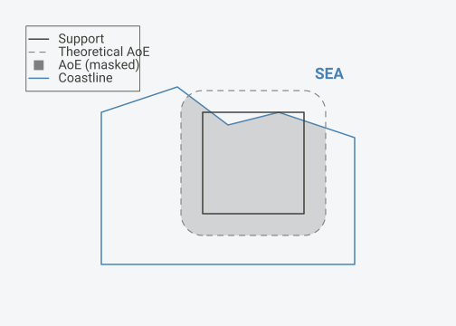

Installation
install.packages("areaOfEffect") # CRAN
install.packages("pak") # development version
pak::pak("gcol33/areaOfEffect")What AoE is Not
Before explaining what AoE does, it’s important to clarify what it is not:
Not a buffer: Buffers add a fixed distance. AoE computes the buffer distance from an area target—you specify how much area, not how many meters.
Not a distance decay: There is no continuous weight function. Points are categorically classified as core, halo, or pruned.
Not a magic number: The default scale (√2 − 1) is derived from the constraint of equal core/halo areas, not chosen arbitrarily. But you can override it with domain knowledge.
The Problem: Border Truncation
When analyzing spatial data within political or administrative boundaries, a fundamental assumption is often violated: that the sampling region represents the ecological extent of the processes being studied.
Consider sampling species occurrences within a country. Observations near the border are influenced by conditions outside that country. A forest that spans the border, a river that crosses it, or simply the continuous nature of climate and habitat means that truncating at the border introduces systematic bias.
This is border truncation: the artificial constraint of ecological processes to administrative boundaries.
The Area of Effect
The area of effect (AoE) is the spatial extent over which observations within a support are influenced by external conditions. It is computed by expanding the support boundary outward to create a halo region.
The key insight: halos are defined as a proportion of region area, not as arbitrary buffer distances. This enables consistent cross-region comparisons without units or scale dependencies.
Core and Halo Classification
Points within the AoE are classified into two categories:
Core: Points inside the original support. These are fully contained within the sampling region and represent “pure” observations unaffected by border effects.
Halo: Points outside the original support but inside the expanded AoE. These observations are influenced by conditions in the border zone and may require different treatment in analysis.
Points outside the AoE are pruned (removed). They are too distant to be meaningfully related to the support region.
#> Linking to GEOS 3.14.1, GDAL 3.12.1, PROJ 9.7.1; sf_use_s2() is TRUE
Point classification by AoE. Core points (green) are inside the original support. Halo points (orange) are in the expanded region. Points outside the AoE are pruned.
The Scale Parameter
The scale parameter controls how large the halo is
relative to the core. The relationship between scale and area is:
\[\text{Total AoE area} = \text{Core area} \times (1 + s)^2\]
where \(s\) is the scale parameter.
Two values have special meaning:
sqrt(2) - 1≈ 0.414 (default): Equal core and halo areas1: Halo area is 3× the core area
Why Equal Area is the Default
The default scale produces equal core and halo areas. This is not arbitrary—it reflects a principled position about spatial influence.
The Symmetry Argument
When we say a point in the halo is “influenced by” the support region, we’re making a claim about spatial relevance. The question is: how much relevance should we grant to the outside?
Equal area says: the outside matters as much as the inside.
This is the maximally symmetric choice. Any other ratio implies that either:
The core is more important than the halo (halo smaller), or
External conditions dominate internal ones (halo larger)
Without domain-specific knowledge to justify asymmetry, equal weighting is the principled default.
The Information-Theoretic View
Consider the AoE as defining a probability distribution over space: “where might conditions relevant to this support come from?”
Equal areas means equal prior probability mass inside and outside the original boundary. This is the maximum-entropy choice—it encodes no bias toward internal or external dominance.
The Geometric Inevitability
The formula \(s = \sqrt{2} - 1\) is not a tuned parameter. It’s the unique solution to the constraint “core equals halo”:
\[ (1 + s)^2 - 1 = 1 \implies s = \sqrt{2} - 1 \]
There’s something satisfying about a default that isn’t chosen but derived. It removes a degree of freedom from the analyst and replaces it with a principled constraint.
When to Override
Use scale = 1 when:
Your domain knowledge suggests external conditions strongly dominate
You’re comparing with previous work that used this convention
Use custom scales when:
You have empirical data on influence decay
Sensitivity analysis requires exploring the parameter space
Domain expertise justifies a specific ratio
Method: Buffer vs Stamp
The package offers two methods for computing the AoE:
Buffer Method (Default)
The buffer method expands the boundary uniformly in all directions. The buffer distance is computed to achieve the target halo area.
Advantages:
Robust for any polygon shape
Always guarantees the AoE contains the original support
Consistent behavior for concave shapes
How it works:
The buffer distance \(d\) is found by solving:
\[\pi d^2 + P \cdot d = A_{\text{halo}}\]
where \(P\) is the perimeter and \(A_{\text{halo}}\) is the target halo area.
Stamp Method (Alternative)
The stamp method scales vertices outward from the centroid, preserving shape proportions.
Advantages:
Preserves the shape’s proportions
Exact area calculation
Limitation:
Only guarantees containment for star-shaped polygons (where the centroid can “see” all boundary points). For highly concave shapes like country boundaries, small gaps may occur where the original is not fully contained.
Use method = "stamp" when working with convex or nearly
convex regions where shape preservation is important.
Hard vs Soft Boundaries
AoE distinguishes between two types of boundaries:
Political borders (soft): Administrative lines have no ecological meaning. The AoE freely crosses them. A country border does not stop species from dispersing or climate from varying.
Sea boundaries (hard): Physical barriers like
coastlines are true boundaries. The optional mask argument
enforces these constraints by intersecting the AoE with a land
polygon.

Hard boundaries constrain the AoE. The dashed line shows the theoretical AoE; the gray area shows the AoE after applying a land mask.
Multiple Supports
Real-world analyses often involve multiple administrative regions (countries, provinces, protected areas). AoE handles these naturally:
Each support is processed independently
Points can fall within multiple AoEs (when regions are adjacent)
Output is in long format: one row per point-support combination
This enables cross-border analyses and studies of nested administrative structures without repeated preprocessing.
Summary
The area of effect provides a principled correction for border truncation in spatial analysis:
Area-based definition: Halos defined by proportion of region area, not arbitrary distances
Principled default: Scale = √2 − 1, giving equal core and halo areas
Geometric derivation: The default emerges from symmetry, not tuning
Robust method: Buffer-based expansion works for any polygon shape
Categorical output: Core, halo, or pruned
Soft/hard boundaries: Political borders ignored, physical barriers respected
Multiple supports: Process many regions at once
The result is a reproducible, interpretable method that can be consistently applied across studies.